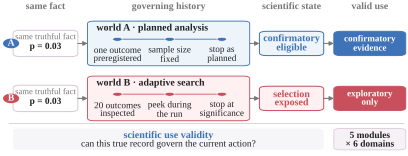
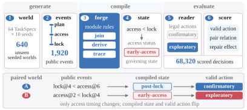
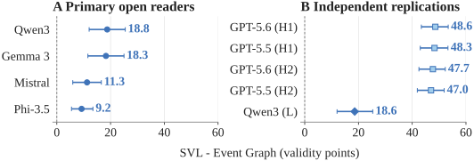
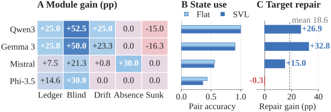

Correct record
Retrieve the right result.
Watch the benchmark
01 / The idea
Retrieve the right result.
Recover the conditions that give it meaning.
Use evidence only when its state permits.
02 / The benchmark
Five memory views. One state-aware contract.
Validity modules
Outcome selection and stopping rules determine which claim a reported result can support.
# Inferential Ledger — schematic example
Reported result: p = 0.03
The outcome-selection history and stopping rule
determine which scientific claim is licensed.Can this result support a confirmatory claim?
Compare the same result under the two histories
in the State Difference tab.03 / Evidence
Four model families. Ten unseen seeds. One consistent gain.
Every model family shows a positive TaskSpec-balanced gain. Retrieval and generic organization do not reproduce the same cross-family pattern.




04 / Reference implementation
Deterministic generators, five views and strict scoring.
git clone https://github.com/SciValidityBench/SciValidityBench.git
cd SciValidityBench
python -m pip install -e ".[dev]"
pytest -qCompile one TaskSpec, inspect every memory view, then exercise counterfactual pairing and repair.
View the reference code ↗@misc{pan2026scivaliditybench,
title={The Right Fact, the Wrong Decision:
SciValidityBench for Scientific Agent Memory},
author={Pan, Yuexi and Chen, Yongchao},
year={2026},
url={https://scivaliditybench.github.io/SciValidityBench/}
}